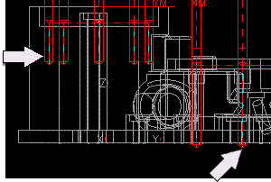
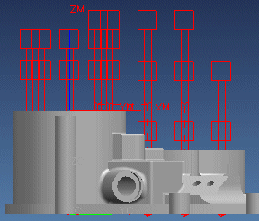

Edit the operation to drill through the part
-
In the Operation Navigator, right-click in the background and choose Program Order View.
-
In the Operation Navigator, double-click the DRILLING_.25 node.
You will edit the DRILLING_.25 operation so that the blind and thru holes are drilled to model depth.

-
In the Spot Drilling dialog box, in the Cycle Type group, click Edit Parameters
 .
.
-
In the Specify Number of dialog box, accept the default of 1 set and click OK.
-
In the Cycle Parameters dialog box, click Depth (Tip).
-
In the Cycle Depth dialog box, click Model Depth.
The Cycle Parameters dialog box should reflect the model depth.
-
Click OK.
-
In the Spot Drilling dialog box, in the Actions group, click Generate
 .
.

-
Click OK to complete the drilling operation.